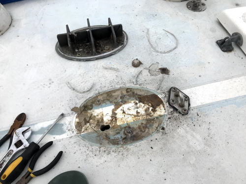
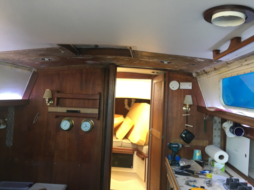
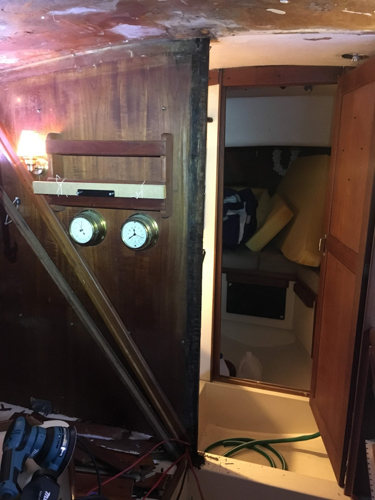
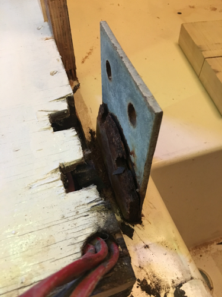
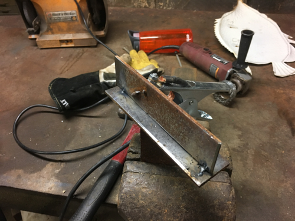
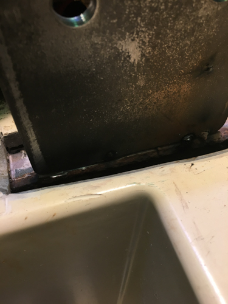
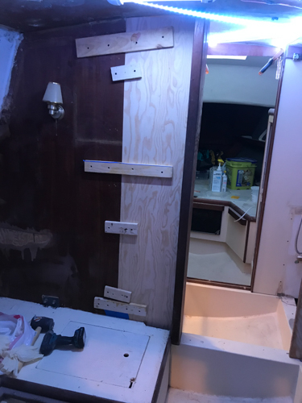
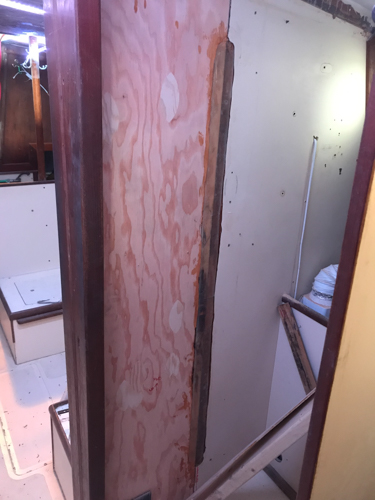

More Bulkhead Rot
More Bulkhead RotPublished: Sun 02 Jun 2019
The port bulkhead had water damage from a leak due to improper sealing of the mast step. Conifer's mast is deck-stepped, so the only place where water can enter the boat is through a small hole in the mast step where the wiring passes. The mast step is designed to keep the mast in place while allowing any water that might enter the mast to drain. Unfortunately, a previous owner had applied silicone caulk around the edge of the mast step, essentially plugging the drains. This caused water to build up in the mast until it entered the wiring pass-through. The results, over years, are self explanatory.
Video!
 Mast Step
 Bulkhead - Trim and compression post hides the rot
 Port Bulkhead Rot
More Bulkhead Rot
 Rust on the center beam tab
 The resulting deterioration
The resulting deterioration
Luckily the rust was limited to the connection between the tab and the main beam. After cutting the old tab off I was able to confirm that the beam below was in serviceable shape and could accept a new tab.
 Practicing on a similar piece
 Old Tab Ground Off
Old Tab Ground Off
 Tack welds on the new tab
The weld came out well but I didn't get a picture of it before glassing over it.
 New Bulkhead Tabbed In
 Glassed In
 Smoothed
Smoothed
Next up - properly sealing deck hardware holes.